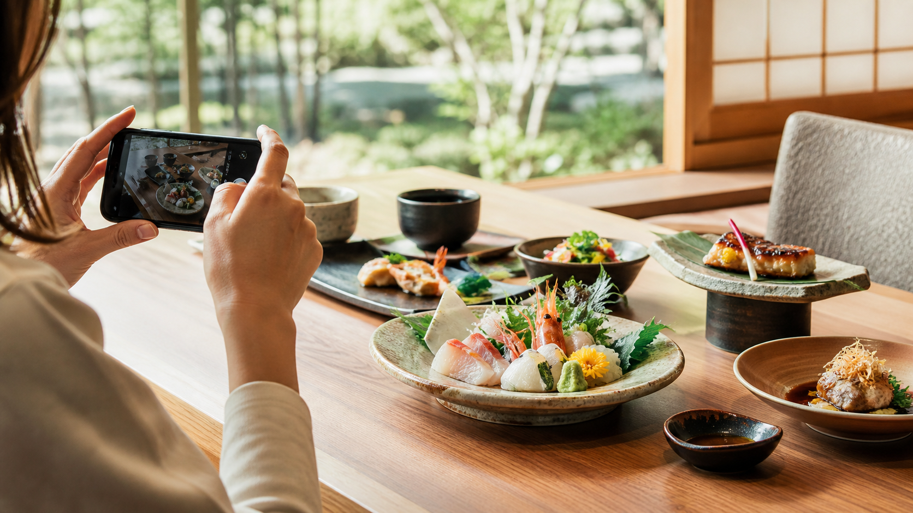
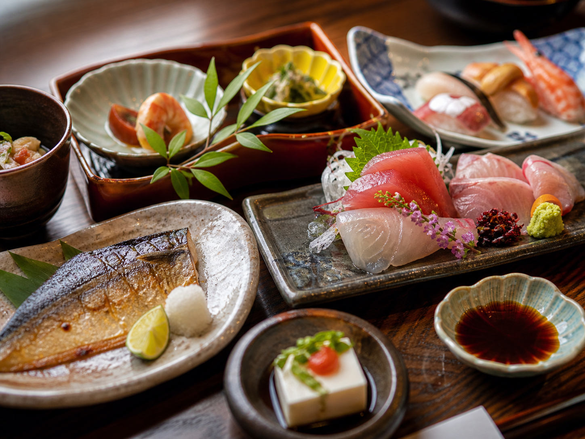
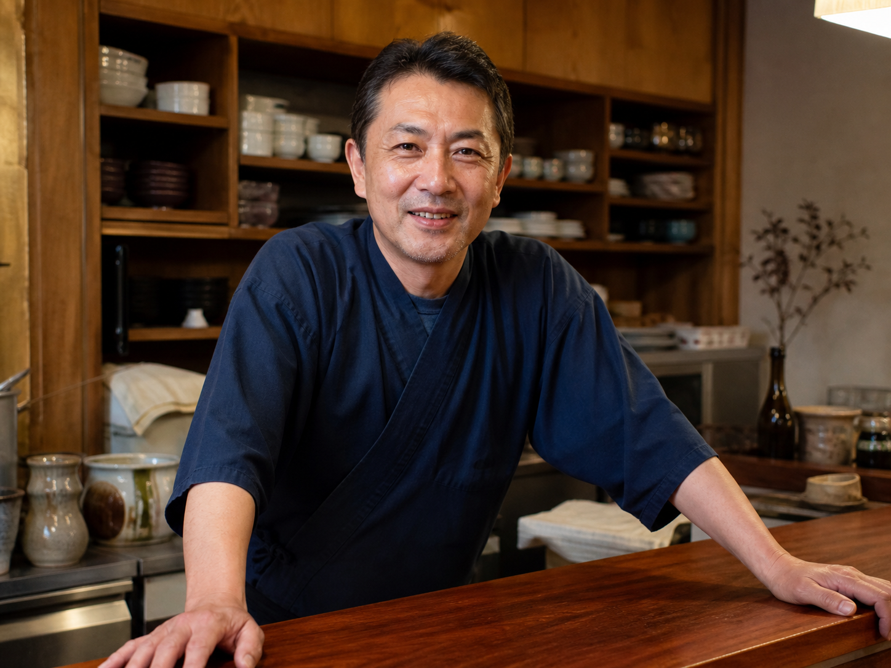
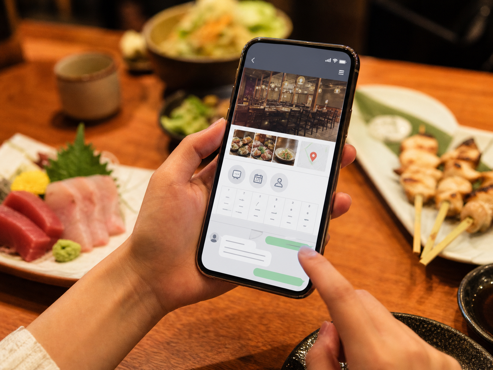
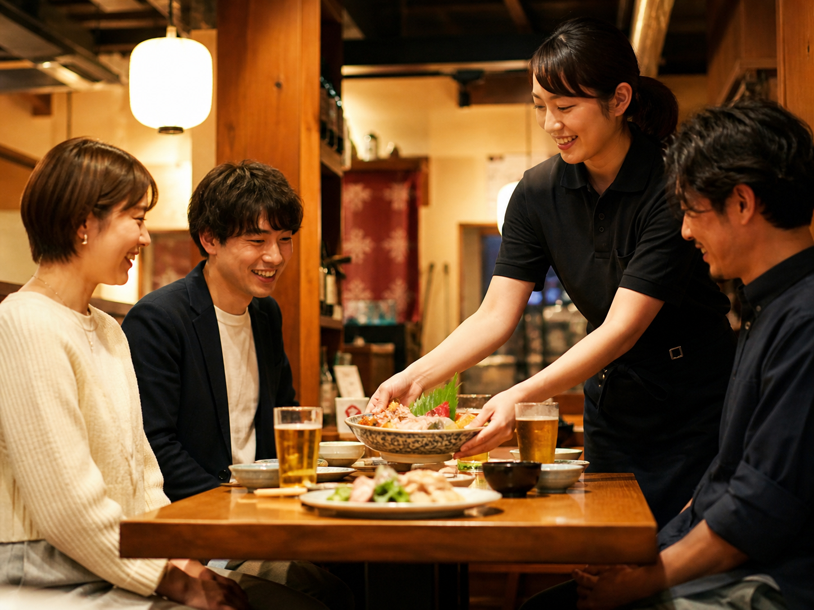

現在のお悩みのヒアリング
今困っていること、増やしたいお客様、使っている集客手段を伺います。
枚方発、北河内・京阪沿線と近隣エリアの飲食店専門
Instagram・TikTok・Googleマップ・LINE公式などを活用し、お店を知ってもらうところから、来店・予約・リピートまでの流れを整えます。SNSが苦手な店主様にも、わかりやすく伴走します。
枚方市を中心に、寝屋川市・交野市・八幡市などの北河内・京阪沿線エリア、高槻市など近隣エリアも対応。まずは無料相談から。

無料相談
無料相談では、お店の現状やSNSのお悩みを伺いながら、Instagram・Googleマップ・LINE公式・予約導線などを簡単に確認します。その場で見える範囲の改善ポイントをお伝えし、必要に応じて、より詳しく整理する初回集客導線診断をご提案します。
今困っていること、増やしたいお客様、使っている集客手段を伺います。
お店の特徴や予約方法が、初めて見た人に伝わりやすいかを確認します。
検索した人が来店判断や予約に進みやすい状態かを、見える範囲で確認します。
無料相談の時間内で気づいた、すぐ整えやすいポイントをお伝えします。
無料相談で十分か、有料の初回診断や月額サポートが必要かを一緒に確認します。
無料相談
初回集客導線診断
お悩み
毎日の営業で忙しい中、SNSや予約導線まで整えるのは簡単ではありません。
サービス概要
枚方飲食集客LABは、枚方市を中心に、寝屋川市・交野市・八幡市などの北河内・京阪沿線エリア、高槻市など近隣エリアの飲食店に向けた集客導線改善サービスです。 SNS投稿を増やすだけではなく、お店の魅力を整理し、Instagram・TikTok・Googleマップ・LINE公式・LP・予約導線などを組み合わせて、認知から来店・予約・リピートまでの流れを整えます。
「何を投稿すればいいか」だけでなく、「見た人が次にどこへ進めばよいか」まで一緒に考えることで、日々の発信を来店につながる動きに変えていきます。
運営者
枚方エリアの飲食店・地域グルメ情報に触れてきた経験をもとに、地域の飲食店様が無理なく続けられるSNS活用と集客導線づくりをサポートします。
SNSが苦手な店主様にも、専門用語をできるだけ使わず、現状に合わせてわかりやすくご提案します。投稿数を増やすことだけではなく、来店や予約につながる流れを一緒に整えていくことを大切にしています。
対応エリア
枚方市を中心に、寝屋川市・交野市・八幡市などの北河内・京阪沿線エリア、高槻市など近隣エリアの飲食店様もサポートしています。近隣エリアの店舗様も、まずはお気軽にご相談ください。
地域の生活圏や来店導線を意識しながら、無理なく続けられる集客の形を一緒に整えます。
魅力の見せ方
料理写真、店内の雰囲気、店主の想い、季節メニュー、キャンペーン情報など、お店の魅力はたくさんあります。枚方飲食集客LABでは、それらをSNS・Googleマップ・LINE公式・LPなどに合わせて整理し、見た人が次の行動を取りやすい形に整えます。

写真で伝えるべき料理、季節メニュー、注文されやすい見せ方を整理します。

初めてのお客様が安心して来店できるように、お店の空気感を伝えます。
見た人が予約、問い合わせ、再来店へ進みやすい入口と出口を整えます。
違い
SNSは投稿することが目的ではありません。大切なのは、お店の魅力を知ってもらい、来店・予約・リピートにつなげることです。
InstagramやTikTokの発信だけでなく、Googleマップ、LINE公式、LP、予約フォーム、問い合わせ導線まで含めて、お客様がお店にたどり着く流れを整えます。
導線設計
SNSを頑張ることだけが目的ではありません。SNSを入口にして、予約や来店につながる道筋をつくります。

投稿を見た人が、お店の情報を調べ、予約や問い合わせに進み、再来店につながるように、各ツールの役割を整理します。
強み、客層、地域で選ばれる理由を言葉にします。
初めて見た人に、お店の魅力と次の行動が伝わる形へ整えます。
料理、店内、店主の想い、季節企画などを来店目線で設計します。
若いお客様や新規客に知ってもらうきっかけを作ります。
検索から来店判断につながる情報を整えます。
一度来たお客様に、また来てもらう流れを作ります。
興味を持った人が迷わず予約・問い合わせできる状態にします。
期間限定企画を、認知から利用までつなげます。
反応を見ながら、次に改善するポイントを提案します。
サービス内容
今あるものを活かしながら、必要なところから順番に整えていきます。
現在のSNS、Googleマップ、LINE、予約導線を確認し、改善ポイントを整理します。
お店の強み、客層、地域性に合わせて、何を発信すべきか設計します。
InstagramやTikTokの投稿内容、文章、見せ方をサポートします。
検索・来店・リピートにつながる導線を整備します。
興味を持ったお客様が予約や問い合わせに進みやすい流れを作ります。
反応を見ながら、次に何を改善すべきかをわかりやすく提案します。
選ばれる理由
地域の飲食店が続けやすい形で、集客の流れづくりを支援します。
他社比較
目的が違うと、見るべき範囲も変わります。
| 比較項目 | 枚方飲食集客LAB | 一般的なSNS運用代行 | 広告代理店・グルメサイト依存 |
|---|---|---|---|
| 目的 | 来店・予約につながる導線改善 | 投稿作成・投稿代行が中心 | 広告や掲載による露出 |
| 支援範囲 | SNS、Googleマップ、LINE、LP、予約導線まで必要に応じて確認 | SNSアカウント内の運用が中心 | 広告配信や掲載ページが中心 |
| 対象 | 枚方発、北河内・京阪沿線と近隣エリアの飲食店 | 幅広い業種 | 幅広い店舗や企業 |
| 地域理解 | 枚方市、寝屋川市、交野市、八幡市など北河内・京阪沿線エリアと、高槻市など近隣エリアの生活圏を意識 | 地域性は支援会社により差がある | 媒体や広告枠に左右されやすい |
| 改善内容 | 反応を見ながら導線全体を改善 | SNS内の数値改善が中心になりやすい | 費用をかけた露出改善が中心 |
| SNS初心者への説明 | 専門用語を減らし、わかりやすく伴走 | 担当者によって差がある | 運用画面や広告用語が多くなりやすい |
| 来店導線への意識 | 知る、調べる、予約する、また来る流れを重視 | 投稿後の行動設計が弱くなりやすい | 短期的な集客に偏る場合がある |
料金プラン
まずは無料相談からでも大丈夫です。月額運用の前に、必要な改善点を詳しく整理する有料の初回診断から始めることもできます。
初回診断
無料相談よりも詳しく、Instagram・Googleマップ・LINE公式・予約導線などを確認し、課題と改善ポイントを整理します。月額運用を始める前に、まず何を直すべきか知りたい店舗様におすすめです。
単発 30,000円〜
まずはSNSと基本導線を整えたい店舗向け
月額 50,000円〜
おすすめ
SNS発信と集客導線改善を継続したい店舗向け
月額 100,000円〜
SNS、Googleマップ、LINE、LP改善までしっかり進めたい店舗向け
月額 150,000円〜
| 項目 | ライト | スタンダード | 伴走 |
|---|---|---|---|
| 集客導線診断 | 対応 | 対応 | 対応 |
| SNSプロフィール改善 | 対応 | 対応 | 対応 |
| 投稿企画 | 対応 | 対応 | 対応 |
| 投稿作成サポート | 一部 | 対応 | 対応 |
| Googleマップ導線改善 | 一部 | 対応 | 対応 |
| LINE公式導線改善 | - | 対応 | 対応 |
| LP・予約導線改善 | - | 一部 | 対応 |
| 月次改善提案 | 対応 | 対応 | 対応 |
正式な内容は、お店の状況や必要な支援範囲に合わせて無料相談でご提案します。
導入の流れ
まずは現状を伺い、無理なく始められる改善案をご提案します。
お店の状況や今のお悩みを伺い、見える範囲で簡単に確認します。
無料相談で十分か、初回診断や月額サポートが必要かを確認します。
必要に応じて、SNS、予約、問い合わせ、再来店の流れを詳しく確認します。
優先順位をつけて、取り組む内容をご提案します。
必要な施策から順番に進めます。
反応を見ながら、次の改善につなげます。
よくある質問
はじめての方にも安心してご相談いただけるよう、よくある質問をまとめました。
A. 大丈夫です。専門用語をできるだけ使わず、わかりやすくご説明します。
A. はい、大丈夫です。必要に応じて、GoogleマップやLINE公式なども含めて改善提案します。
A. 可能です。ただし、枚方飲食集客LABでは投稿すること自体を目的にせず、来店や予約につながる導線づくりを重視しています。
A. はい、大丈夫です。今ある導線を確認し、必要なものから順番に整えていきます。
A. はい。無料相談では、お店の現状を伺い、その場で見える範囲の簡単な確認を行います。詳しい整理が必要な場合のみ、初回集客導線診断をご提案します。
無料相談
SNSを投稿しているのに来店につながらない。何から改善すればいいかわからない。 そんな状態でも大丈夫です。現在のSNSや導線を確認し、お店に合った改善ポイントをご提案します。
フォームへ移動します。お店の状況がまとまっていなくても、お気軽にご相談ください。
